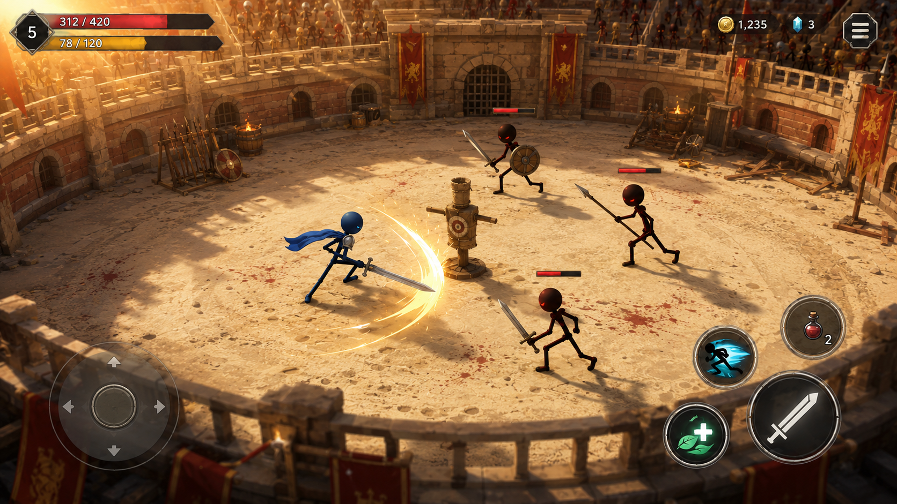
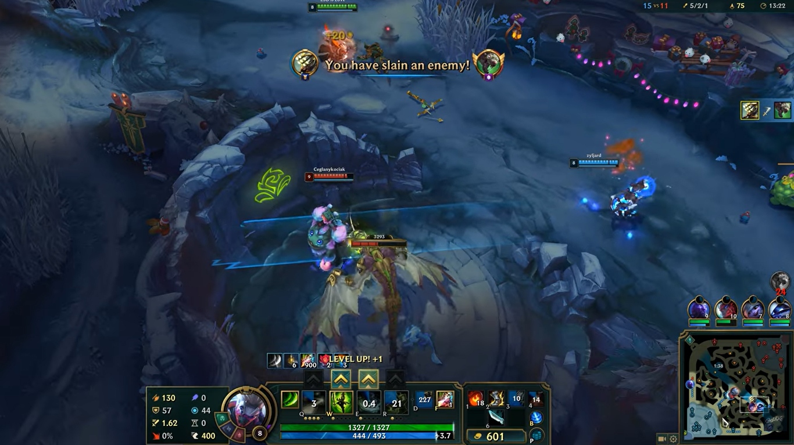
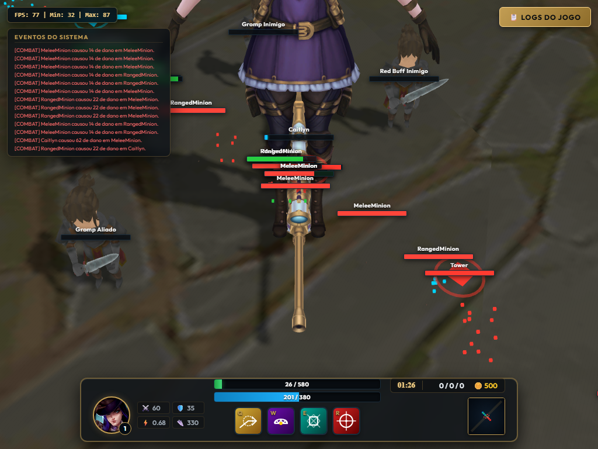
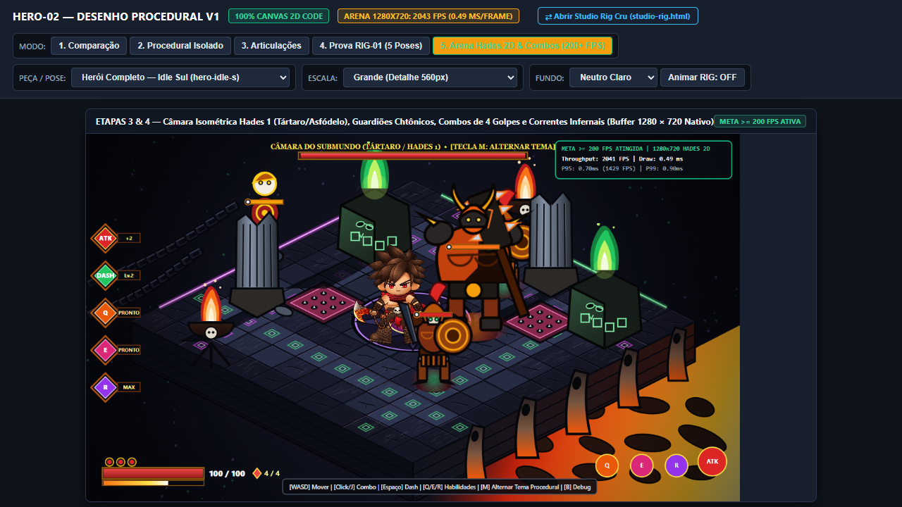
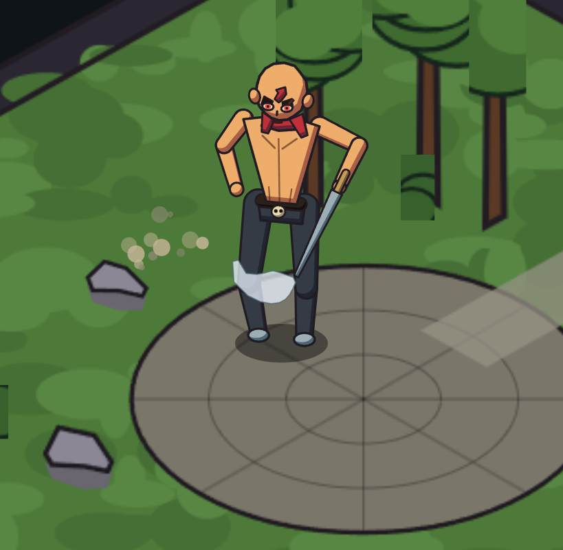
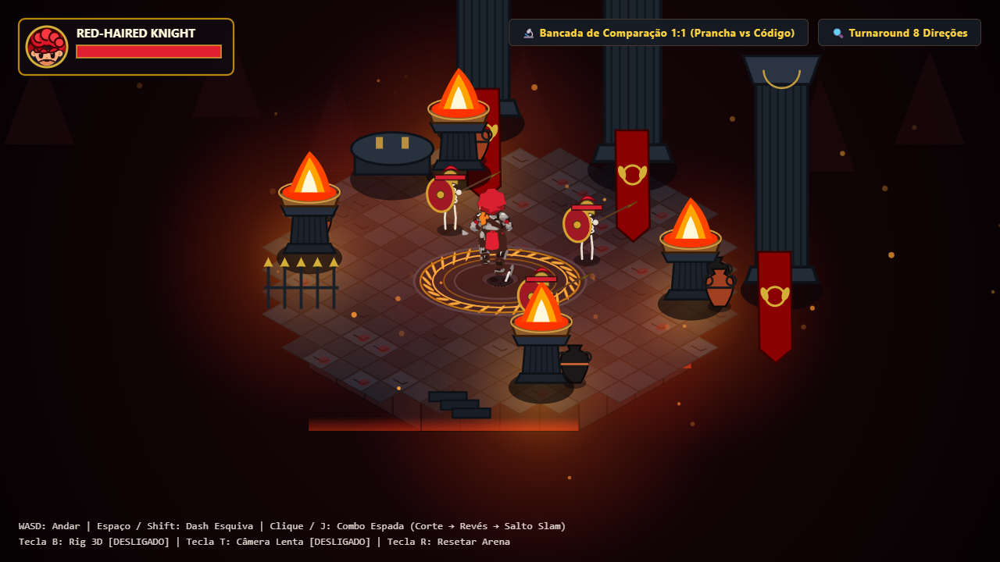

Arena do Gladiador v1
17/07/2026Meu primeiro passo tentando criar um jogo 3D direto na web! Construí uma arena de combate de gladiadores romanos em um coliseu circular, com barra de vida, stamina, movimentação com joystick virtual para celular, dummies de treino e arquitetura pronta para multiplayer com Colyseus.

📸 Print Real do JogoGladiador v2 (Stickman Procedural 3D)
17/07/2026Para deixar o jogo ultra leve e rodar liso sem carregar modelos pesados, criei o personagem inteiro (um Stickman articulado) e as texturas diretamente via código. Adicionei shaders de iluminação pós-processada (Bloom), física de combate e modos de câmera (visão isométrica Diablo vs câmera de ação Witcher).
 📸 Print Real do Jogo
📸 Print Real do Jogo
MOBA v0 (Grid & Tentativa com Assets Prontos)
15/10/2026Neste terceiro teste, tentei importar assets 3D prontos externos (modelos, mapas e texturas) diretamente para o Three.js. Mas na primeira tentativa deu tudo errado e ficou tudo bugado: as texturas ficaram invertidas, os shaders quebraram, a malha de colisão não alinhava e deu erro de renderização. Foi um fracasso inicial frustrante!
Mas eu não desisti: absorvi os erros, entendi como a pipeline do Three.js tratava os formatos e, no teste seguinte, recriei o projeto do zero e consegui consertar tudo (que foi o teste da Caitlyn, o grande sucesso!).

📸 Print Real do Teste1v1 MOBA Arena: Caitlyn vs Master Yi IA
20/07/2026Depois que o teste anterior deu errado, refiz o projeto do zero focando na Caitlyn, e esse teste FOI O GRANDE SUCESSO! Conseguimos fazer a réplica completa com tudo funcionando: rotas, torres automáticas que disparam, ondas de minions marchando, tiros balísticos e animações da Caitlyn e uma IA completa controlando o Master Yi contra ela! Esse foi o melhor resultado que alcancei até aquele momento.
Por que não continuei daqui? Por dois motivos bem claros: 1) Eu queria criar algo 100% original meu, sem usar personagens e propriedade intelectual dos outros (como os da Riot/LoL); 2) Ter que ficar modelando em 3D ou desenhando em 2D e animando manualmente dá um trabalho absurdo que eu não queria ter. Então fui procurar outras formas inovadoras de produzir jogos (o que me levou à animação procedural por código). Mas o resultado até aqui ficou incrível e provou que a mecânica funcionava perfeitamente!

📸 Print Real do JogoO Bake-Off 2D & O Fiasco do "Bando de PNGs"
19/10/2026Foi aqui que comecei a tentar fazer jogos em 2D procedural. No meu primeiro teste criei as partes do personagem, recortei tudo, mas na hora de montar no código não deu certo: virou só um bando de PNGs estáticos colados na tela que nem se mexiam e não prestavam pra nada! Foi frustrante, mas foi a primeira tentativa real de abandonar a animação manual frame a frame.
Para tentar destravar o desenvolvimento, fui quebrando a cabeça e melhorando a lógica. Montei um 'Bake-Off' técnico colocando 4 inteligências artificiais (ChatGPT, Codex, DeepSeek e Antigravity) para competir lado a lado, tentando desenhar o herói puro em código HTML5 Canvas com ciclos de animação e resposta aos controles.
Consegui chegar nesse protótipo jogável na arena da ilha com movimentação e combos. Só que quando fui testar, percebi o problema: o personagem ainda parecia um bando de PNGs recortados deslizando na tela, e não um personagem verdadeiramente procedural e orgânico!
Eu estava quase desistindo de gamedev aqui! A decepção foi enorme por não atingir a fluidez desejada, mas respirei fundo e decidi continuar tentando novas abordagens nas tentativas seguintes.

📸 Print Real do "Bixo Parece PNG"A Saga do Carequinha: Da Falha do DeepSeek ao Motor Antigravity 2.5D
20 a 22/10/2026Coloquei o DeepSeek para tentar desenhar o herói e montar a prancha de poses por código, mas esse nem prestou! O resultado visual ficou tosco e desproporcional, a rotação das poses ficou esquisita, o tronco e a cabeça não batiam e o rig mal conseguia se equilibrar. Fiz questão de deixar jogável aqui para mostrar a realidade: nem todo teste dá certo de primeira!
Para não depender de modelos engessados, isolei o rig do Carequinha em uma arena escura com tochas e iluminação dinâmica. Aqui começamos a acertar a cinemática inversa (IK analítica) das pernas, a rotação suave do personagem mirando no mouse e o primeiro ciclo funcional de combo de espada em 3 golpes.
O salto definitivo do Carequinha! Com engenharia completa do Antigravity, o motor 2.5D foi consolidado: arena com grid em perspectiva isométrica, sombras dinâmicas, partículas de faísca a cada impacto, turnaround de 360° ultra suave e combos encadeados estilo Hades rodando a mais de 200 FPS direto no navegador!

📸 Print Real do CarequinhaCavaleiro Ruivo 2.5D (Evolução & Rigging IK Avançado)
20 a 23/10/2026O mais recente e avançado teste! Evolução do motor para o novo herói: o Cavaleiro de Cabelos Vermelhos. Armadura completa e mechas estilizadas desenhadas diretamente por código Canvas, turnaround em 8 direções e sistema de rigging com cinemática inversa analítica de 2 segmentos em tempo real nos braços e pernas, além de bancada de testes de comparação lado a lado e hitboxes dinâmicas de combate.

📸 Print Real do Jogo